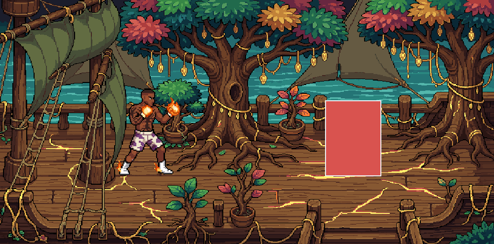

Branch · revised fight composition
Art approval only — live combat has not changed. Same fighter positions, scale and feet line. Mast stays at the far left.
Proposed redraw

Original layout reference

The red enemy block is the existing live placeholder, not proposed enemy art. UI and animated lighting are omitted to make this an artwork comparison. The redraw still varies some tree and foliage shapes.